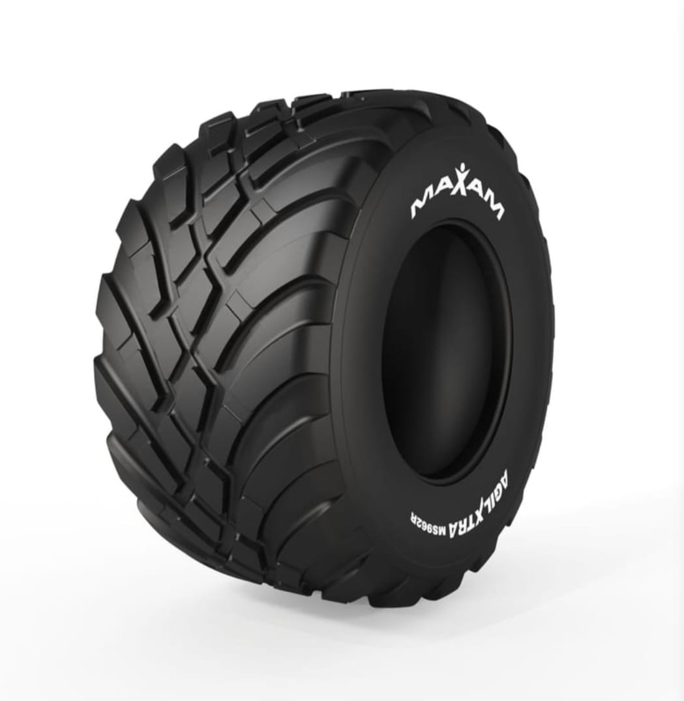
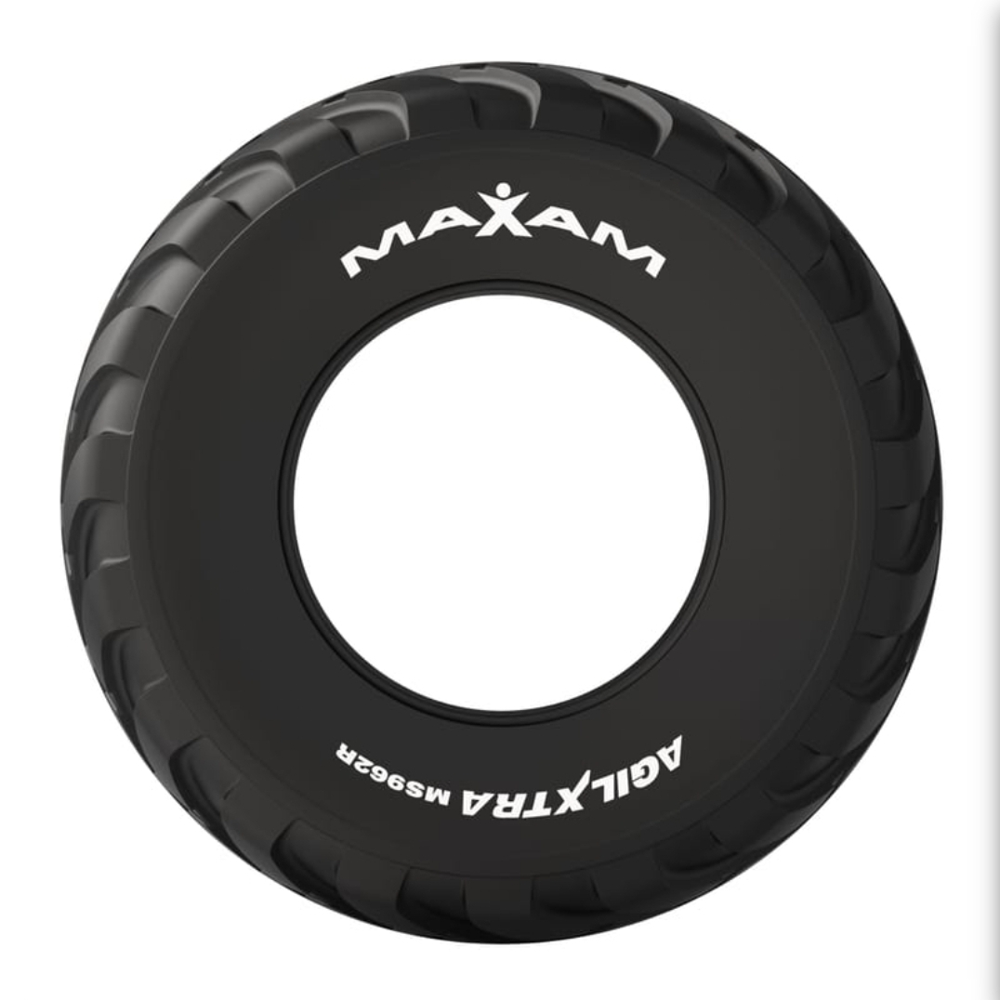
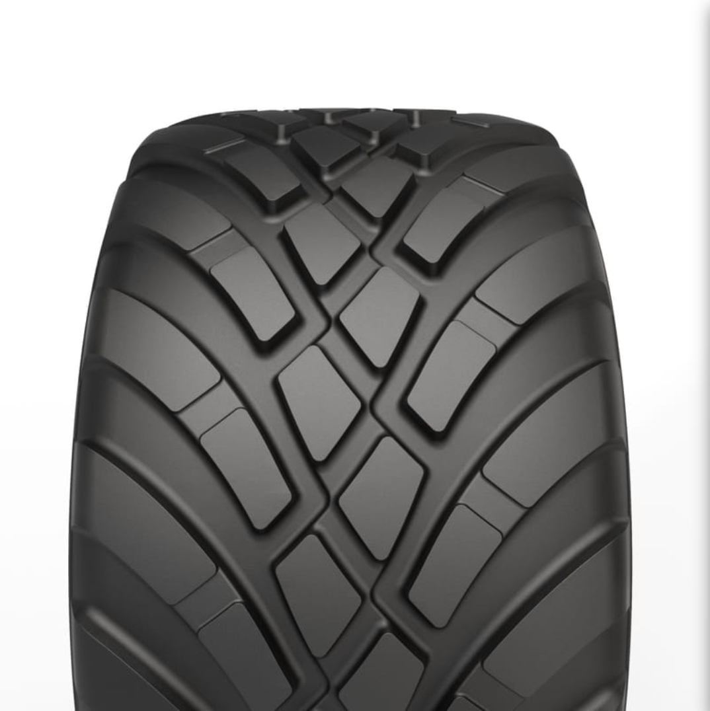
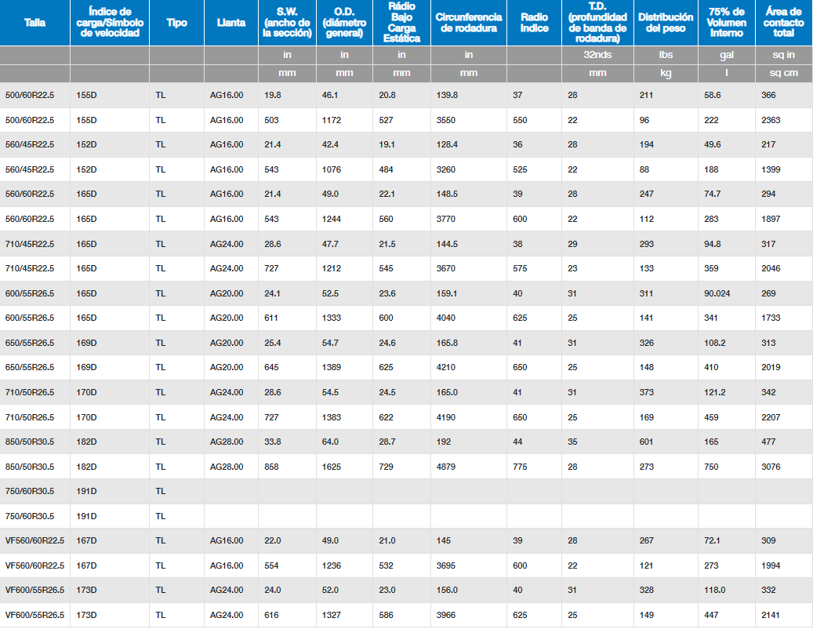

AGILXTRA MS-962R
Neumáticos de implemento de alta flotación
Sobre este producto
Es un neumatico reforzado con acero para aplicaciones de remolques y cisternas agrícolas. La banda de rodadura estabilizada mediante correa proporciona una mayor duración de la banda de rodadura, alta estabilidad y alta resistencia a pinchazos y los peligros del campo. El patrón optimizado de la banda de rodadura proporciona una excelente tracción en el campo y al mismo tiempo minimiza la vibración a altas velocidades.
- Neumático de flotación radial con implementación I3
- Construcción con cinturones de acero que proporciona alta resistencia a pinchazos
- Diseño de banda de rodadura agresivo para alta tracción
- Excelente estabilidad lateral para trabajo en campo y uso en ruta
- Compuesto de banda de rodadura resistente al desgaste y a cortes, ideal para aplicaciones de uso mixto
¿Necesitás esta cubierta?
Consultá por tu medida y disponibilidadFicha técnica
